在线读本（中文版）
RL without Tears
在线版遵循论文的章节结构，但组织成一条有引导的阅读路径，而非压缩版摘要。每一节都在回答上一节留下的问题： LLM 策略是什么、奖励如何训练它、为什么 PPO 风格的 RLHF 需要稳定器、同一套反馈循环后来如何扩展到推理、 智能体与多模态模型。完整推导、参考文献与详细讨论仍以 PDF 论文为准。
第 1 节
引言
强化学习是一套“从反馈中改进行为”的框架。智能体做出决策、接收来自环境的信号，并调整自己的策略， 使未来的决策能收集到更高的奖励。传统教程往往从游戏、机器人或控制问题讲起；本教程则直接从 LLM 出发： 模型接收提示词，逐词元生成回答，并可以在回答或交互完成后被评估 [1]。
LLM 为什么要用强化学习？
论文从一种简单的错位讲起。预训练和监督微调通过给 LLM 展示可模仿的文本来教它，但我们希望助手具备的许多能力， “判断起来”比“穷举示范出来”更容易：有用性、偏好对齐、安全性、推理正确性、任务成败，往往都是完整行为的性质， 而非单个孤立词元的性质。RLHF 利用对生成回答的反馈，把预训练模型对齐到人类偏好；而近年的推理与智能体系统 则把同一思想推广为从验证器、工具、环境和积累的经验中学习 [3][2][12]。
智能及其相关能力，可以被理解为服务于“智能体在其所处环境中对奖励的最大化”。 （Intelligence, and its associated abilities, can be understood as subserving the maximisation of reward by an agent acting in its environment.）
本文要填补的空隙
对 NLP 研究者来说，困难的通常不是动机，而是“翻译层”。RL 论文谈状态、动作、策略、轨迹、回报、评论器和优势； LLM 论文谈提示词、词元、对数概率、补全、偏好数据、奖励模型和 KL 惩罚。两套词汇描述的是相容的对象， 却常常由不同的例子引入。本教程要做的，就是在保留 RL 数学语言的同时，把每个概念都落到 LLM 训练的具体场景中。
| 读者的疑问 | 论文如何回答 |
|---|---|
| LLM 怎么就是策略了？ | 把提示与已生成前缀映射为状态，把下一个词元映射为动作。 |
| 为什么要用奖励，而不只用示范？ | 当精确的目标输出难以规定时，奖励可以直接评估生成的行为。 |
| 为什么需要价值函数和优势？ | 它们降低梯度方差，让策略优化更稳定。 |
| PPO、GRPO、DPO 为何重要？ | 它们代表了从奖励或偏好反馈中优化策略的不同路线。 |
路线图
引言随后划定了论文的范围。教程按读者需要概念的顺序推进：第 2 节先建立通用记号——LLM 生成是一连串决策， 而 RL 给决策过程与反馈命名；第 3 节把这些记号变成一个完整的 PPO 风格 RLHF 工作流；第 4 节重审这个工作流， 追问它在哪里会失效或变得昂贵；第 5 到 7 节把同一套透镜应用于推理、智能体与多模态模型——在那里轨迹更长、 奖励更多样、信用分配更重要。
把提示、前缀、词元与补全翻译成状态、动作、策略与轨迹。
用一个 LLM 训练示例推出“奖励打分—策略更新”的循环。
基础循环清楚之后，强化奖励、优势、效率与偏好优化。
沿同一套反馈逻辑进入推理、智能体与多模态模型。
第 2 节
预备知识：LLM 与强化学习
在介绍策略梯度或 PPO 之前，教程先让故事的两侧使用同一种语言。LLM 这一侧，生成是“在提示和已生成前缀的条件下 做一连串下一词元决策”；RL 这一侧，学习是“策略做出的一连串决策，由沿轨迹的奖励来评价”。第 2 节把这两种观点 连接起来，使后面的算法都能被读成对熟悉的 LLM 对象的操作。
对 LLM 的回顾是有意做了取舍的：只覆盖那些之后会变成 RL 变量的概念——词元概率、提示词、监督微调、解码与采样输出。 它不打算取代完整的 LLM 综述；需要更广背景色者可参考 Foundations of Large Language Models。
2.1 LLM 基础
现代生成式 LLM 通常是仅解码器（decoder-only）Transformer。分词器先把原始文本转换成词表 \(\mathcal{V}\) 中的词元，模型再按从左到右的分解给词元序列 \(\mathbf{z}=z_1,\ldots,z_N\) 赋予概率。 这个分解对 RL 至关重要：一旦回答被写成下一词元概率的乘积，“改变某个采样回答的概率”就可以分解为 “改变构成它的各个词元的概率”。
其中 \(\mathbf{z}_{<i}=z_1,\ldots,z_{i-1}\) 表示 \(z_i\) 之前的词元。因果自注意力保证每个位置的预测 只依赖于前面的词元。
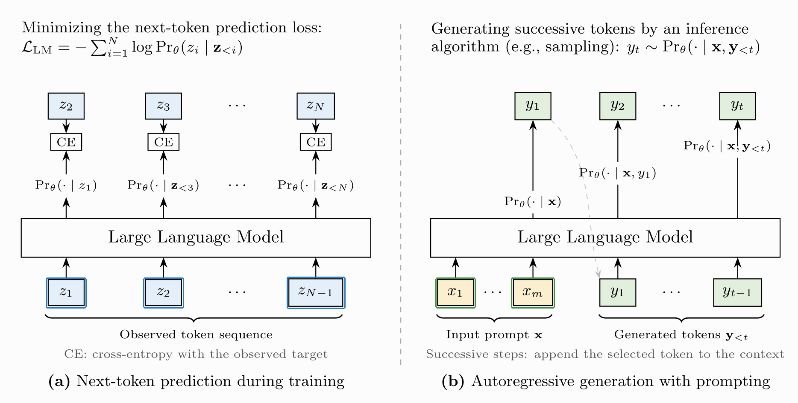
预训练
预训练从大规模无标注文本中学习通用语言能力。语料中的每个词元天然都是自监督目标：模型观察前文上下文， 学习预测下一个词元。若用 \(\mathcal{S}_{\mathrm{pre}}\) 表示预训练语料，其目标就是最大化所有词元对数似然的总和。
完成这一步后，模型能够产出流畅的续写，并吸收了数据中的语言与事实规律。但它的目标仍是“为文本建模”， 而不是“满足用户当前的意图”。正是这一局限引出了后面的适配机制：先用提示改变输入上下文，再用监督微调改变 模型参数，最后用基于奖励的学习改变行为。
提示（Prompting）
提示是一种简单轻量的方式，不更新参数就能让 LLM 适配不同任务。提示是用来引导模型完成某个任务或产出某种输出的 输入文本，可以包含指令、用户提供的内容、输出要求或示范示例。
这个示例里，提示同时规定了任务和期望的回答风格，LLM 则通过续写输入序列来生成回答。提示也可以写成模板。 还是作业辅导场景，我们可以固定指令，只替换一个任务相关的占位符：
如果 {subject} 填入 "math"（数学），模板就变成上面的提示；填入 "English writing"（英语写作）， 同一指令模式就复用到另一个任务上。这正是为什么在更新参数之前，提示通常是第一个被尝试的适配手段。
与提示相关的另一个重要概念是上下文学习（in-context learning）。把示范示例放进上下文，模型就能在回应新输入之前， 先从示例中推断期望的输入-输出模式。
不提供示范时，通常称为零样本（zero-shot）提示；提供一个示范，称为单样本（one-shot）提示； 提供若干示范，称为少样本（few-shot）提示。核心思想是：模型利用当前上下文中的示例来推断期望的 输入-输出模式，而无需修改参数。
上下文学习还可以与思维链（chain-of-thought，CoT）提示结合。CoT 提示鼓励模型在给出最终答案前生成中间推理步骤， 做法可以是直接要求模型“一步步推理”，也可以提供同时包含推理过程与答案的示范示例。
提示通过改变生成所用的上下文来适配 LLM，因此提示质量会强烈影响模型表现。同一个任务可以有多种写法， 例如 "Give me two tips to improve my English writing."（给我两条提高英语写作的建议）也可以写成 "What are two simple ways to improve my English writing skills?"（提高英语写作能力的两个简单方法是什么？）。 两个提示意图几乎相同，输出却可能明显不同。提示强大在于便宜，但它也暴露一个上限：如果模型本身并不可靠地 知道期望行为，只改上下文可能不够。监督微调要解决的正是这个问题：用“期望回答”的示例来更新模型。
监督微调（SFT）
监督微调使用带标注的输入-输出对，对预训练模型做进一步适配。输入 \(\mathbf{x}\) 通常由指令与用户内容组成， 输出 \(\mathbf{y}\) 是期望的回答。SFT 既教模型表达什么知识，也教它以遵循指令的格式来表达。
| 任务 | 输入 | 输出 |
|---|---|---|
| 摘要 | Summarize an article about rapid growth in solar energy.（总结一篇关于太阳能快速增长的文章。） | Solar energy has grown rapidly and become a major renewable source. |
| 问答 | What is the capital of France?（法国首都是哪里？） | Paris. |
| 分类 | Classify a prize-message as spam or not spam.（把一条中奖短信分为垃圾信息或非垃圾信息。） | Spam. |
| 机器翻译 | Translate "RL is widely used to train LLMs" into Chinese.（把 “RL is widely used to train LLMs” 翻译成中文。） | 强化学习被广泛用于训练大语言模型。 |
其中 \(\mathcal{S}\) 是带标注的数据，\(\tilde{\theta}\) 是经 SFT 优化后的参数， \(\hat{\theta}^{+}\) 表示在预训练参数 \(\hat{\theta}\) 基础上的调整。微调从预训练参数出发，而不是随机初始化。
这个形式等价于在输出段上最小化交叉熵损失。实践中，输入词元只作上下文，损失通常只在输出词元上计算。 得到的 SFT 模型常作为后续强化学习训练的起点策略：它已经能遵循任务格式，但可能仍需要反馈， 才能在多个都可接受的回答中更倾向于某一个。
推理（Inference）
推理是把训练好的 LLM 应用到新输入上。给定提示 \(\mathbf{x}\)，模型先预测第一个输出词元上的分布， 由解码策略选出词元、拼接到上下文，再重复这一自回归过程，直到到达停止条件。
| 解码策略 | 如何选择下一个词元 | 权衡 |
|---|---|---|
| 贪心解码 | 每步选择概率最高的词元。 | 快且确定，但局部最优选择可能损害整条序列。 |
| 束搜索 | 保留得分最高的 \(B\) 个候选前缀，逐步扩展。 | 探索更多候选，但计算与内存开销更大。 |
| 采样 | 从 \(\mathrm{Pr}_{\theta}(\cdot\mid\mathbf{x},\mathbf{y}_{<t})\) 中采样，常配合温度、top-\(k\) 或 top-\(p\) 过滤。 | 产出多样的输出，与 RL 中的随机策略采样非常相似。 |
这种“逐词元生成”的视角，是通向 RL 的关键桥梁：在时间步 \(t\)，当前上下文 \((\mathbf{x},\mathbf{y}_{<t})\) 可视为状态，所选词元 \(y_t\) 是动作，模型分布就是策略。采样尤其重要，因为它产生之后被赋予奖励的候选轨迹。
2.2 强化学习基础
LLM 一侧就位后，RL 一侧就容易读了。RL 提供了从反馈中学习的框架：智能体观察状态、按策略选择动作、 获得奖励、转移到新状态。对 LLM 来说，当精确示范难以给出、但生成的行为仍能被人类、奖励模型、规则、验证器 或环境评判时，这一框架最有用。
这一交互过程通常被建模为马尔可夫决策过程（MDP）。轨迹是状态与动作的序列 \(\tau=(s_0,a_0,s_1,a_1,\ldots,s_{H-1},a_{H-1})\)，其优劣由累计奖励评价。目标是学到一个策略， 使期望累计奖励最大。
在 LLM 训练中，“采样”就是从当前策略生成一条或多条轨迹。轨迹可以是一次补全、一条推理轨迹、 一段工具调用交互或多模态生成路径。一旦轨迹得到反馈，RL 算法就更新策略，使更好的行为更可能出现。
| 要素 | 解读 |
|---|---|
| 智能体（Agent） | 强化学习中的学习者或决策者。在 LLM 场景下，智能体对应语言模型本身：它逐词元生成，并依据反馈信号更新自己的行为。 |
| 环境（Environment） | 智能体之外与它交互的一切。与涉及物理或仿真环境的传统强化学习设定不同，基于 LLM 的强化学习中环境通常是抽象的：由提供反馈的训练框架构成，例如对生成输出打分的奖励模型、人工标注或评估指标。 |
| 状态 \((s)\) | 状态表示环境当前的情形。对语言建模而言，时间步 \(t\) 的状态可以定义为到该点为止已观察到的词元序列，即用于预测下一个词元的上下文。形式上 \(s_t=(\mathbf{x},\mathbf{y}_{<t})\)，其中 \(\mathbf{x}\) 是输入提示，\(\mathbf{y}_{<t}\) 是此前生成的词元。 |
| 动作 \((a)\) | 动作对应智能体做出的决策。在 LLM 中，动作自然地定义为从词表中选择下一个词元，即 \(a_t=y_t\)。 |
| 奖励 \((r)\) | 奖励是环境对动作质量的反馈。一般来说，奖励函数可定义为 \(r(s,a,s')\)，表示智能体从状态 \(s\) 经动作 \(a\) 转移到 \(s'\) 时获得的反馈；时间步 \(t\) 写作 \(r_t=r(s_t,a_t,s_{t+1})\)。在确定性场景中，下一状态由 \((s_t,a_t)\) 唯一决定，奖励可简化为 \(r(s_t,a_t)\)。 |
| 策略 \((\pi)\) | 策略定义了智能体的行为，即在给定状态下采取某动作的概率。对 LLM 而言，策略对应“给定上下文时下一个词元的条件分布”：\(\pi_{\theta}(a_t\mid s_t)=\mathrm{Pr}_{\theta}(y_t\mid\mathbf{x},\mathbf{y}_{<t})\)，其中 \(a_t=y_t\)、\(s_t=(\mathbf{x},\mathbf{y}_{<t})\)。在这种表述下，LLM 天然可以被理解为一个参数化策略。 |
| 价值函数 \((V\) 与 \(Q)\) |
价值函数估计“遵循某策略时的期望累计奖励”。状态价值函数 \(V(s)\) 度量从状态 \(s\) 出发的期望折扣回报；动作价值函数 \(Q(s,a)\) 则进一步对初始动作做条件化。 |
有了这些对应关系，本教程余下部分就能用熟悉的语言模型对象——上下文、词元、对数概率、奖励、价值与采样输出—— 来描述强化学习算法。
第 3 节
理解 LLM 训练中的强化学习
第 2 节把 LLM 生成映射成 RL 记号之后，第 3 节展示这套机器在真实 LLM 训练场景中如何运转。贯穿全节的示例是 一个作业辅导助手：它的 SFT 回答是正确的，但太短了。这个例子很好用，因为期望的改进“容易判断、却难以写成 一个标准答案”。与其再写许多新示范，不如对生成的输出定义反馈，并用强化学习让被偏好的行为更可能出现。
本节按依赖顺序展开这套工作流：策略梯度解释标量奖励如何更新一个随机语言模型；时序分解解释回答级奖励如何 作用于词元级决策；基线与优势降低更新的噪声；重要性采样与 PPO 让“从采样数据反复更新”更稳定；奖励建模随后 用学到的偏好分数取代人工手写的反馈；最后所有部件组装成标准的基于 PPO 的 RLHF 循环。
从策略生成输出。
用奖励评估输出。
计算价值或优势。
在 PPO 风格约束下优化策略。
3.1 策略梯度
策略梯度方法回答第一个训练问题：如果我们只能给“完成的样本”打分，如何更新产生它们的模型？在 LLM 训练中， 策略就是生成词元上的条件分布。既然无法枚举所有可能的输出，期望奖励就只能用采样的回答来估计。
从论文的 LLM 记号出发
假设空间 \(\Omega\) 大到无法枚举，论文用采样的输出 \(\mathcal{D}=\{\mathbf{y}_1,\ldots,\mathbf{y}_d\}\) 来近似它。
这里 \(J(\theta)\) 表示策略目标，\(\pi_{\theta}\) 是由 \(\theta\) 参数化的策略模型，\(\tau\) 表示采样的轨迹。 \(R(\tau)\) 是赋给该轨迹的累计奖励，\(\nabla_{\theta}\log \pi_{\theta}(\tau)\) 是当前策略下轨迹对数概率的梯度。
策略梯度形式之所以好用，是因为奖励本身不需要可微。奖励可以来自人工标注员、训练好的奖励模型、基于规则的检查器 或外部环境。模型更新只需要采样轨迹在当前策略下的对数概率 [1]。
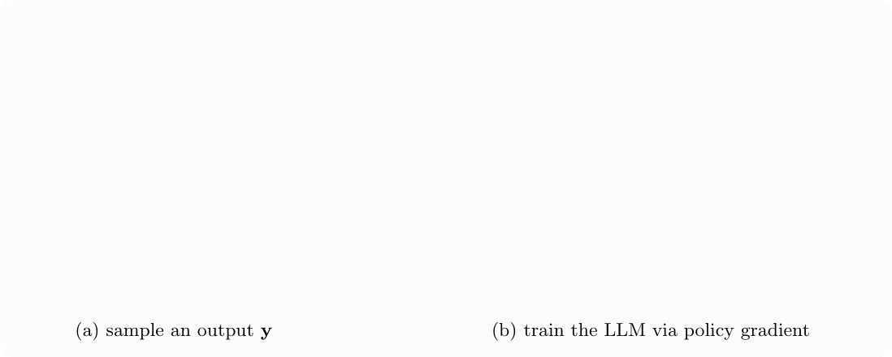
于是，奖励高的采样回答被赋予更高概率，奖励低的被赋予更低概率。接下来的小节将对这一基本策略梯度原则做细化， 以应对长序列、噪声奖励和不稳定更新。
3.2 时序分解
基本的策略梯度表达式给整个回答打分，但 LLM 是通过词元概率被更新的。时序分解把这两个层面连接起来： 生成的回答由词元组成，完整回答的概率可以分解为词元级概率，序列级奖励因此能够作用于产生这条序列的各个决策。
论文中的时间步分解
在第 \(t\) 个生成步骤，\(y_t\) 不影响“过去奖励”项 \(\sum_{k=1}^{t-1}r_k\)。论文因此去掉该项， 只保留从 \(t\) 开始的未来回报。
难点在于：序列级奖励并不能直接告诉我们哪个词元导致了成功或失败。一个正确答案可能包含大量与奖励无关的普通词元； 一个错误答案可能只因开头一处推理错误而错。因此，时序分解给出了训练的数学通路，却没有彻底解决信用分配问题。
输出越长，这个问题越严重。短回答中，把所有词元赋同样的奖励或许可以接受；在推理轨迹和智能体轨迹里， 单个最终奖励太粗糙了。后文因此会讨论过程奖励、验证器与智能体的信用分配。
3.3 降低梯度方差
时序分解给了每个词元一个学习信号，但这个信号可能非常嘈杂。直接使用原始奖励，可能仅仅因为某些动作出现在一条 总体不错的轨迹里，就提高它们的概率——即使这些动作相对当前状态并不比平常更好。为了降低方差， 策略梯度方法引入了基线与优势。
这里 \(A(s,a)\) 表示在状态 \(s\) 采取动作 \(a\) 的优势；\(Q(s,a)\) 表示在状态 \(s\) 先采取动作 \(a\) 之后的 期望回报；\(V(s)\) 表示在该策略下从状态 \(s\) 出发的期望回报。
优势衡量的是：某个动作是否优于同一状态下的期望行为。价值模型估计期望未来奖励；减去这个基线，既能保持期望梯度 的正确性，又能让更新更稳定。
在 LLM 中，价值模型常通过“复用预训练主干 + 加一个标量头”来实现。它们在结构上像奖励模型，功能却不同： 奖励模型评价一个输出；价值模型估计当前策略下某个状态的期望回报。
| 模型 | 在 PPO 风格 RLHF 中的角色 | 是否被更新？ |
|---|---|---|
| 策略模型 | 生成输出，并接受策略梯度更新。 | 是。 |
| 奖励模型 | 用学到的偏好信号给生成的输出打分。 | 在策略优化期间通常固定。 |
| 价值模型 | 预测期望回报，用于估计优势。 | 是。 |
| 参考模型 | 正则化策略，限制过度漂移。 | 否。 |
3.4 重要性采样
优势让更新不再那么嘈杂之后，另一个现实问题出现了：数据可能已经有点“过期”。采样输出常由策略的旧版本生成， 而优化发生在一个或多个参数更新之后。重要性采样用当前策略与旧策略之间的概率比来校正这种不匹配。
这里 \(\rho_t(\theta)\) 表示时间步 \(t\) 的重要性采样比；\(\pi_{\theta}\) 是当前策略； \(\pi_{\theta_{\mathrm{old}}}\) 是产生该采样动作的旧策略；\(s_t\) 是状态，\(a_t\) 是在该状态下采取的动作。
这个比值之所以必要，是因为数据新鲜度很重要：如果学习者离产生样本的策略太远地更新，样本就越来越不可靠。 论文用一个糟糕的采样步骤来说明这一点——若不控制参考策略，它会拖累后续的生成质量。
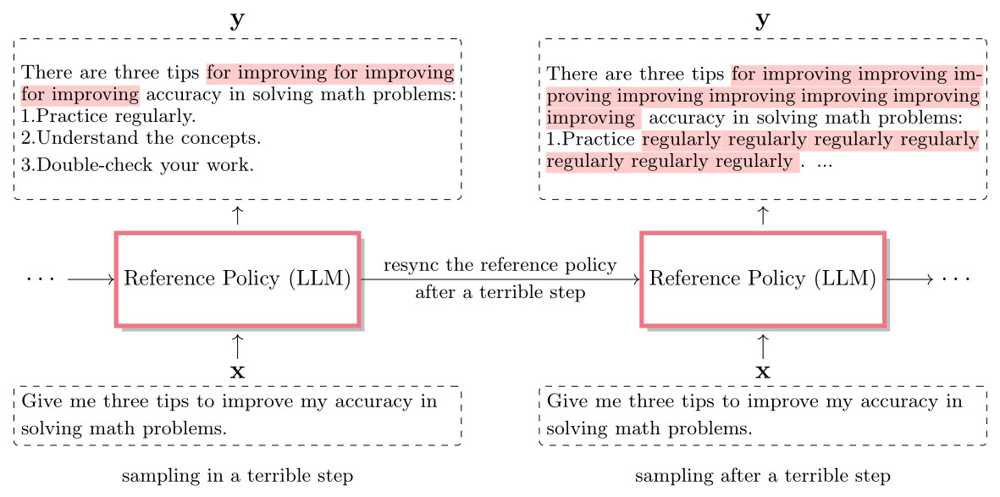
3.5 近端策略优化（PPO）
重要性采样告诉优化器“当前策略与产生样本的策略差多远”，PPO 则在这个差异周围装上护栏。它的核心思想是： 在目标函数里裁剪重要性比，阻止策略在一次更新中变化过大 [4]。
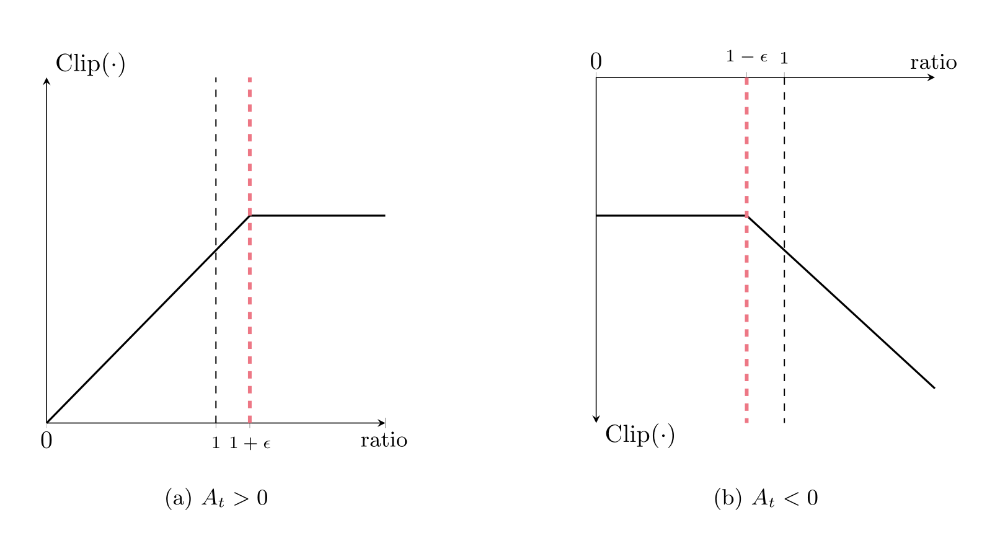
这里 \(\rho_t\) 是当前与旧策略的概率比，\(A_t\) 是时间步 \(t\) 估计的优势。裁剪范围 \([1-\epsilon,1+\epsilon]\) 限制了单次更新中策略能改变的幅度。
若优势为正，模型被鼓励提高该动作的概率，但只允许在有界的范围内；若优势为负，模型被鼓励降低概率，同样有限度。 这使 PPO 很适合 RLHF——在那里，过度的奖励优化会损害语言质量，或利用奖励模型的弱点。
这就是论文中的 PPO 损失：裁剪后的优势项更新策略，\(\beta \mathrm{Penalty}_t\) 约束偏离参考模型的漂移。
3.6 训练奖励模型
到这里，奖励可以想象成一个简单的分数。RLHF 需要一种可规模化的方式，为大量采样回答产生这个分数， 因此通常在策略优化之前先训练奖励模型。奖励模型把输入-输出对映射为标量分数，常用成对偏好数据训练： 由人类或 AI 评审在两个候选回答中挑出更好的那个 [5]。
论文先介绍几种收集反馈的方式：评分（Rating）请标注者给出数值分数；列表式排序（Listwise ranking）请其对一组 候选输出排序；成对比较（Pairwise comparison）请其在同一输入的两个输出中选出更好者。成对比较被广泛采用， 因为它通常比给出绝对分数更容易、更可靠。
这里 \(\mathcal{L}_{\mathrm{RM}}\) 是奖励模型损失；\(r_{\phi}\) 是由 \(\phi\) 参数化的奖励模型；\(\mathbf{x}\) 是输入； \(\mathbf{y}_w\) 是被偏好的输出序列，\(\mathbf{y}_l\) 是被拒绝的输出序列。sigmoid 函数把奖励差转换为偏好概率。
成对比较之所以常用，是因为相比绝对数值分数，它的标注往往更可靠。训练完成后，奖励模型可以为大量新生成的回答打分， 为策略优化提供可规模化的信号。
在策略优化期间，奖励模型通常独立地对完整输入-输出对打分。这意味着奖励往往是稀疏的：中间词元得不到直接奖励， 只有最后一个词元拿到奖励模型的分数。这一局限正是后文要讨论奖励塑形、过程奖励模型与步骤级验证的原因之一。
3.7 一个完整的工作流
本节最后把各组件组合成标准的基于 PPO 的 RLHF 工作流：先由偏好数据训练奖励模型；策略采样输出； 奖励模型为输出打分；价值模型估计优势；PPO 在参考策略约束下更新策略。
这个工作流说明，RLHF 不只是一个算法目标：它是一个训练系统，涉及数据生成、奖励推断、KL 正则化、优势估计、 优化与评估。有了系统视角，下一章就顺理成章——许多现代方法都可以理解为：让这套循环中的某个组件更可靠、 更便宜或更易优化 [2]。
第 4 节
面向 LLM 的改进强化学习
第 3 节搭好了基础的 PPO 风格 RLHF 工作流。第 4 节继续盯着同一套工作流，追问它在现代 LLM 规模下变得实用之前 必须改进什么。讨论围绕四个压力点组织：如何构造更好的奖励、如何在不引入过多方差或成本的情况下估计优势、 如何在在线训练中少花算力，以及何时用直接偏好学习取代“显式奖励模型 + 强化学习”的流水线。
| 问题 | 讨论的方法 | 主要收益 |
|---|---|---|
| 稀疏或质量差的奖励 | 奖励塑形、基于规则的奖励、过程奖励。 | 提供更稠密或更可靠的反馈。 |
| 奖励模型的局限 | 生成式奖励模型、评分细则奖励、奖励模型评估。 | 提升对齐效果与评估透明度。 |
| 评论器昂贵或不稳定 | TD、GAE、GRPO、免价值模型的优势估计。 | 改善偏差-方差与系统成本的权衡。 |
| 流水线复杂 | DPO 及相关直接偏好方法。 | 无需显式在线 RL 循环，直接从偏好对优化。 |
本节的顺序与训练循环一致。先讲奖励，因为奖励决定策略将学到什么；接着讲优势估计，因为奖励必须转化为稳定的 词元级更新；再讲效率，因为采样与打分才是现实成本的大头；最后讲 DPO，因为它改变的是流水线本身。
4.1 更高级的奖励模型
奖励的构造强烈决定策略学到什么。若奖励稀疏、有噪声、有偏或容易被钻空子，策略优化就可能产生“分数漂亮、 却不符合真实目标”的行为。因此，现代 LLM 强化学习对奖励设计的重视与日俱增。
4.1.1 自动偏好数据生成
第一个问题是数据。人类偏好标签有用，但昂贵且主观。一种可规模化的替代方案，是请一个强模型或验证器来比较候选输出。 在论文的作业辅导示例里，评审会看到输入与两个候选回答，然后选出信息更丰富、更准确、更清晰、更有帮助的那个。
这使偏好数据更容易扩展，因为系统与标签都可以自己生成。但论文也强调风险：AI 反馈可能继承位置偏置、 评审模型自身的偏好，以及评审提示里的错误。实践中常用提示设计、示范示例、多样化的候选生成、 以及人机反馈混合等手段来提高生成偏好数据的质量与多样性。
4.1.2 奖励塑形
第二个问题是稀疏。标准奖励模型常常在整个回答生成完之后只给一个分数。这种延迟奖励很难回溯分配到各个词元决策上， 对长推理轨迹或智能体轨迹尤其如此。奖励塑形的应对办法是加入中间奖励，把学习信号变稠密。
例如，LLM 可以在答案末尾从奖励模型拿到延迟奖励，同时因格式合法、中间推理正确、或部分进展有用而获得中间奖励。 论文把这个想法与基于势函数的塑形联系起来：
当势函数取价值函数时，这一形式与优势估计紧密相关。要紧的告诫是：塑形奖励必须始终与最终目标保持一致， 否则模型优化的可能是中间信号，而不是我们真正想要的行为。
4.1.3 提升奖励泛化
第三个问题是泛化。强化学习过程中策略在变化，开始产生与“训练奖励模型所用偏好数据”不同的输出。 一个在静态验证集上表现良好的奖励模型，仍可能在策略学会利用它的弱点时失效。
这种失败模式常被称为奖励投机（reward hacking）或过度优化（overoptimization）：奖励模型分数上升， 模型行为的真实质量却没有。论文介绍了几种现实防御：集成多个奖励模型以减少单模型错误；参数冻结与正则化 有助于保留底层 LLM 的通用特征；更多样的偏好数据能降低“奖励模型只在狭窄分布上有效”的风险。
4.1.4 生成式奖励模型
传统奖励模型通常给输出打一个标量分数。生成式奖励模型则把偏好判断表述为语言建模任务： 模型接收提示、输入与候选输出，生成一个标签或判断词元 [6]。
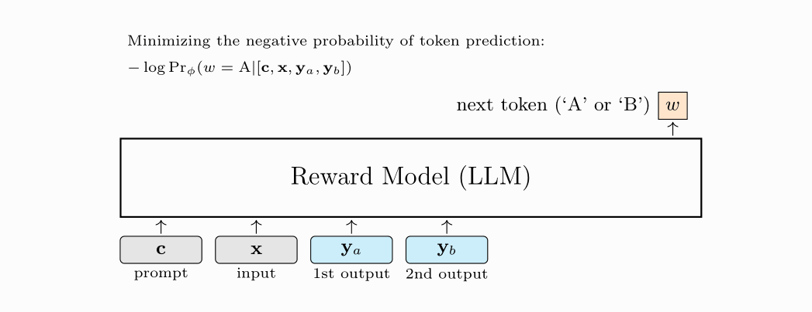
这种表述能利用 LLM 的推理能力与指令遵循行为。当评估需要按细致入微的标准比较回答、而不仅是独立打一个标量分时， 它尤其有用。
4.1.5 基于评分细则的奖励模型
基于评分细则（rubric）的奖励模型让评估标准显式化。评分细则不要求一个不透明的整体偏好， 而是规定正确性、完整性、遵循指令、安全性、风格、证据等维度，奖励模型再按这些标准评估回答。
评分细则可以是整体式的、逐标准式的、检查清单式的或分层的。整体式细则基于多条标准给出总体判断； 逐标准式细则给每个维度分别打分；检查清单式细则把评估分解为原子条件；分层式细则则把标准组织在多个层级上。
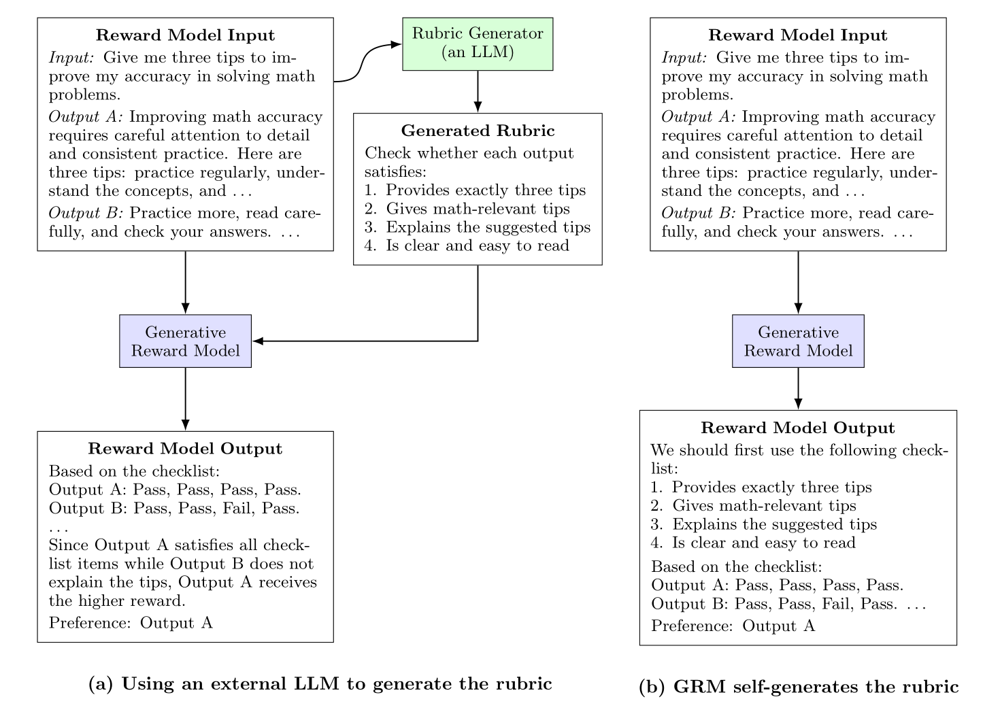
生成评分细则可以人工或自动完成。自动生成很有吸引力，因为它能把评估标准适配到每个输入。论文还讨论了 评分细则优化：通过偏好数据或强化学习来打磨细则，使其更好地区分高质量回答 [7]。
4.1.6 奖励模型评估
评估奖励模型很难，因为奖励模型不是最终应用，它被用来训练或挑选策略。一个奖励模型可能在静态偏好预测上表现很好， 却在策略于优化过程中学会利用它时失效。
论文总结了三种评估范式。基于强化学习的评估：用每个奖励模型训练一个策略，再让得到的策略在下游基准上一较高下。 成对排序评估：检查奖励模型是否给被偏好的回答打更高分。列表式排序评估：让奖励模型从多个候选中挑出最佳回答 [8]。
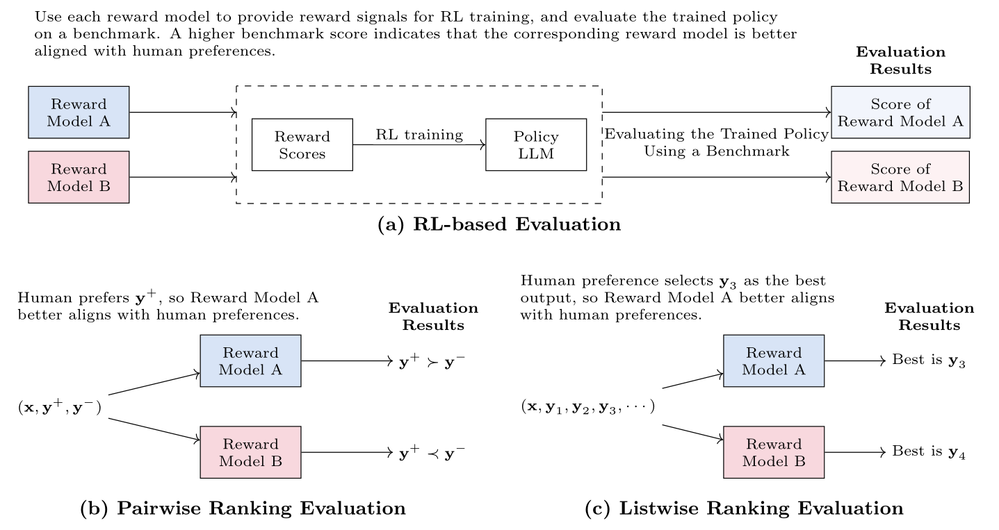
这些评估回答的是不同问题。成对与列表式排序更容易规模化扩展；基于强化学习的评估更昂贵， 但它是在奖励模型真正会被使用的环境中检验它。实践中，静态评估与下游评估都有价值。
4.2 更好的优势估计
改进奖励构造之后，下一个问题是如何把奖励转化为策略更新。优势估计要在策略优化的偏差与方差之间做权衡： 蒙特卡洛估计使用观察到的回报，偏差可以较低，但方差往往很高；时序差分方法通过从价值估计自举来降低方差， 但可能引入偏差。
4.2.1 基于时序差分（TD）的优势估计
第 3 节里基本的蒙特卡洛优势用的是“观察到的未来回报减去价值基线”。这一直观，但很长的 LLM 输出会让观察到的回报 很嘈杂。时序差分估计用一步目标取代完整未来回报：立即奖励加上下一状态的价值。由于它从价值模型自举、 而不必等待整条轨迹结束，估计的噪声更小。
这里 \(\delta_t\) 是时序差分残差，衡量实际观察到的转移比价值模型的预期更好还是更差。
代价是偏差：若价值模型不准，自举出来的目标就可能是错的。这就是为什么优势估计通常被表述为一个偏差-方差问题， 而不是一条“最佳公式”。
4.2.2 广义优势估计（GAE）
广义优势估计用一个可调的权衡把这些思想结合起来。在 LLM 训练中，长序列与延迟奖励让问题更复杂： 独立的评论器可以估计词元级价值，但为语言训练一个可靠的评论器既昂贵又不稳定 [9]。
\(\lambda\) 控制把多少未来的时序差分信息混入当前优势。取值小更依赖短时域自举，取值大则更接近蒙特卡洛回报。
4.2.3 组相对策略优化（GRPO）
GRPO 针对独立评论器的成本与不稳定问题：它从同一提示采样的一组回答中估计优势，不依赖学习到的价值模型， 而是在组内对奖励做归一化。只要某个回答比同一输入的其他采样回答更好，就被认为是好的 [10]。
这里 \(G\) 是组内采样输出的数量，\(A_{i,t}^{\mathrm{GRPO}}\) 是第 \(i\) 个输出使用的组相对优势。
这种方法很适合推理任务：可以为同一道题生成多个候选解答并由验证器打分，组本身就是天然的基线。 去掉评论器还能简化训练、降低计算成本。
| 估计器 | 依赖什么 | 权衡 |
|---|---|---|
| 蒙特卡洛 | 观察到的完整回报。 | 低偏差、高方差。 |
| 时序差分 | 立即奖励加下一状态价值。 | 低方差、可能引入偏差。 |
| GAE | 带 gamma 与 lambda 的递归 TD 误差。 | 偏差-方差平衡可调。 |
| GRPO | 同一采样组内的相对奖励。 | 免去单独的价值模型。 |
4.3 高效强化学习方法
即使有了更好的奖励与优势，强化学习后训练仍然昂贵。成本不只在优化器一步：训练循环要反复生成 rollout、打分、 估计优势、更新策略，还常常要在内存里同时保留多个模型。对 LLM 来说，这既是时间效率问题也是空间效率问题—— 我们希望以更短的墙上时间、更少的采样词元、更少的奖励模型调用和更低的内存压力，达到期望的强化学习效果。
本节聚焦两类主要的浪费。第一类是采样：RL 数据集中的每个提示都可能要求自回归生成，大规模强化学习还会在许多训练步里 重复这个过程。第二类是奖励计算：一个可靠的奖励模型本身可能就是一个大 LLM，给每条 rollout 打分代价不菲。 因此高效强化学习方法问的是一个简单问题：循环里哪些部分对学习真正必要，哪些可以跳过、近似，或换成更便宜的信号？
| 成本来源 | 为什么贵 | 效率策略 |
|---|---|---|
| Rollout 采样 | 必须先由策略自回归生成词元，才能拿到奖励。 | 用推理加速，或只采样真正需要探索的提示。 |
| 奖励打分 | 大型奖励模型给每个采样输出都增加额外前向计算。 | 改用规则、验证器、更小的奖励模型、蒸馏、剪枝或专家混合设计。 |
| 辅助模型 | PPO 风格训练要同时驻留策略、参考、奖励与价值模型。 | 可能时删去或简化组件，如免价值模型的优势方法或直接偏好方法。 |
| 无信息量的提示 | 有些提示早已被解决，有些在当前阶段又太难。 | 优先处理“奖励显示仍有提升空间”的提示。 |
4.3.1 动态采样
采样是 LLM 强化学习的主要成本之一，因为必须先由策略自回归生成、再打分。动态采样质疑的是： 是否每个提示都值得同样多的探索。若当前策略对某提示已经给出高奖励回答，继续采样可能是浪费； 若某提示太难、始终获得很低的奖励，反复探索同样低效。
从推理侧看，许多标准 LLM 加速技术能缩短 rollout 时间，如 KV 缓存、量化、批处理和投机解码。 动态采样与之不同：它从强化学习训练一侧决定“哪些提示本来就不值得探索”，从而减少采样。 动机在于：SFT 或预训练后的策略不是随机初始化的智能体——对某些提示它已经能给出强答案， 对另一些提示它当前太弱、不增加更多能力根本发现不了有用轨迹。对这两种情况一视同仁就是浪费采样预算。
一种简单策略是：先为每个提示 \(\mathbf{x}_k\) 生成贪心回答 \(\hat{\mathbf{y}}_k\)，再用奖励模型给该回答打分：
这里 \(R_k\) 是赋给当前贪心输出的奖励，\(N\) 是纯输入数据集 \(\mathcal{S}_x\) 中的提示数， \(r_{\mathrm{upper}}\) 是一种可行的上阈值。
高于上阈值的提示可以跳过或少采样，因为当前策略已经做得足够好。还可以引入下阈值 \(r_{\mathrm{lower}}\)： 低于它的提示可能被降级，因为策略在当前阶段不太可能找到有用输出。最有价值的提示常常位于两个阈值之间：
这段“中间地带”正是探索最可能有回报的区域：模型不算完美，但也不是一筹莫展。对这些提示采样多条 rollout 能暴露出有意义的奖励差异，从而让 PPO、GRPO 或其他强化学习优化器在每生成一个词元时获得更强的学习信号。
代价是阈值成了训练设计的一部分。\(r_{\mathrm{upper}}\) 设得太低，可能停止训练仍有提升空间的提示； \(r_{\mathrm{lower}}\) 设得太高，可能过早丢弃困难样本、降低鲁棒性。实践中，动态采样常与周期性重打分结合， 让提示随策略进步而重新进入或退出活跃集合。
4.3.2 轻量级奖励方法
第二大成本是奖励计算。在标准 RLHF 循环里，每个采样输出都必须交给奖励模型。如果奖励模型很大， 这就在策略生成之上又叠加了可观的推理开销。轻量级奖励方法试图通过替换、补充或压缩奖励模型来降低该成本。
基于规则的奖励是最明确的例子：数学任务奖励正确的最终答案；代码任务奖励通过测试；格式任务奖励字段齐全的合法 JSON。 这类奖励快速、确定，且不易受奖励模型失准影响。在数学、编程、格式与工具调用等“正确性有时可自动检查”的任务里， 它们格外有用。
| 奖励类型 | 示例 | 优点 | 局限 |
|---|---|---|---|
| 格式规则 | 对包含 tip1、tip2、tip3 等必需键的合法 JSON 给予奖励。 | 便宜且精确。 | 只检查形式，未必保证内容。 |
| 答案规则 | 数学回答的最终答案与已验证解一致时给奖励。 | 答案可检查时很可靠。 | 可能稀疏，且忽略推理质量。 |
| 执行验证器 | 对通过单元测试的代码，或达到正确环境状态的工具调用给予奖励。 | 度量真实任务成败。 | 需要可信的执行环境。 |
| 小型奖励模型 | 蒸馏或剪枝更大的奖励模型以加快打分。 | 保留学习式偏好判断的部分灵活性。 | 可能继承错误、损失细节。 |
规则的主要好处是稳定。由于奖励是预先定义的，策略不太能以同样的方式利用学习式奖励模型的隐藏怪癖。 但基于规则的奖励只在“目标行为能被可靠检查刻画”时有效：JSON 合法性奖励能保证结构，却不能保证建议真的有用； 最终答案奖励能验证正确性，却说不清哪一步推理出了问题。正因如此，把轻量奖励与过程奖励、验证器或 偶尔的学习式奖励模型检查结合，往往是最强的做法。
在更宽泛的偏好对齐场景，学习式奖励模型仍然有用，因为期望行为往往细腻到简单规则无法覆盖。 这时效率可以来自“让奖励模型更便宜”而不是删掉它：蒸馏可以用小模型模仿大模型；剪枝与量化能降低推理开销； 专家混合奖励模型每个样本只激活部分参数。这些做法比手写规则保留更多灵活性，但仍必须评估—— 更便宜的奖励模型可能校准更差、更不鲁棒。
4.4 直接偏好优化（DPO）
本节以一个更根本地改变工作流的方法收尾。DPO 给出了偏好学习的另一条路线：不先训练奖励模型再做强化学习， 而是直接从偏好对优化策略。这使训练更接近监督学习，其基本形式不再需要显式的在线强化学习循环 [11]。
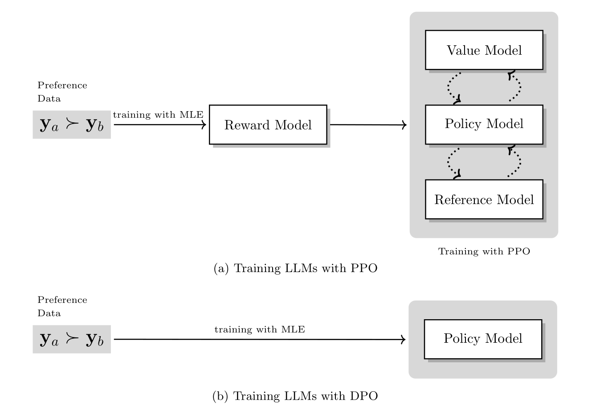
DPO 简化了流水线，实现往往更直接。但它通常基于固定的偏好数据，而强化学习方法可以持续从当前策略采样、 从新生成的行为中学习。因此，PPO 风格的强化学习与 DPO 风格的偏好优化，代表的是“探索能力、实现简单性、 系统成本”之间的不同取舍。
第 5 节
面向 LLM 推理的强化学习
讲完一般性的强化学习训练及其改进后，教程转向推理。这是第一个主要的应用章节，因为在推理任务上，反馈的价值最直观： 数学答案可以被检查，代码可以跑测试，带工具调用的推理可以用外部结果来评估。这些信号往往稀疏， 但比开放式偏好判断更客观 [12]。
本节从测试时讲起，因为在任何参数更新之前，搜索与验证就已经能改进答案。这让读者先掌握基本模式： 生成多条推理路径、评估它们、选出或改进最好的那些。本节随后通过迭代式强化学习、大规模强化学习与同策略蒸馏， 把这一推理时的模式变成训练，让更强的推理成为模型自身的一部分，而不只是包在模型外面的一道流程。
5.1 测试时扩展
测试时扩展通过生成多条候选推理路径并挑选其中强者来提升表现。Best-of-N 采样是代表性例子：模型采样若干回答， 由奖励模型或验证器打分，返回分数最高的回答。
本节从推理而非训练开始，因为推理质量常常只需在测试时投入更多计算就能提升。像 "Let's think step by step" （让我们一步步思考）这样的提示能鼓励更长的推理，但它并不告诉模型哪条推理路径真的更好。 测试时扩展补上了选择信号：生成备选、评估它们、保留最有希望的那个。
在 Best-of-N 采样中，候选可以由奖励模型重排。若没有奖励模型，当答案容易比较时（例如带最终数值结果的数学题）， 可以用多数投票。同一思想也能通过拒绝采样用于训练：采样多个回答，保留最好的那些，再用这些被选中的输出微调模型。
这就搭起了通向强化学习的桥。如果验证器能在推理时可靠地识别更好的候选，那么同一信号也可以在训练期间使用， 让模型学会更频繁地直接生成强推理路径，而不必依赖测试时的大量采样。
5.1.2 逐步验证
对长推理链而言，最终答案的奖励可能太稀疏。逐步验证通过评估中间推理步骤提供更稠密的反馈， 有助于定位解答路径从何处开始出错，支持更精确的信用分配 [13]。
过程奖励模型可以给部分解答打分，贪心或束式流程则可以沿最有希望的路径继续展开。 这把推理从“一次成型的生成”转向“有引导地构造解答”。
关键变化在反馈的粒度：验证器不再只给最终答案打分，而是给每个中间步骤或前缀打分。 一条路径若部分推理已不乐观，就可以被提前放弃。同一过程奖励之后还能在强化学习中充当塑形奖励， 比单个结果分数给模型更有信息量的反馈。
5.1.3 蒙特卡洛树搜索（MCTS）
蒙特卡洛树搜索把推理更正式地形式化为搜索：节点表示部分推理状态，边表示候选的下一步。 搜索过程选择有前景的节点、扩展它们、模拟后续、并把评估结果回传 [14]。
当模型具备足够的局部推理能力提出候选步骤、但需要搜索才能找到可靠全局解时，MCTS 很有用。 验证器或奖励模型会把搜索引向期望成功率更高的路径。
在本教程的表述中，MCTS 还澄清了“推理为什么类似序贯决策”：每个推理步骤都改变状态，后续步骤依赖早期选择， 来自模拟终局答案的延迟奖励可以传播回更早的部分状态。
| 测试时方法 | 被评分的对象 | 反馈粒度 |
|---|---|---|
| Best-of-N | 完整的采样输出。 | 结果级。 |
| 逐步验证 | 中间推理步骤。 | 过程级。 |
| MCTS | 部分推理状态及其后续。 | 搜索式混合反馈。 |
5.2 迭代式强化学习
一旦验证器能识别更好的推理路径，下一个问题就是如何把该信号变成训练配方。迭代式强化学习通过 DeepSeek-R1 的流程来讲解： 它没有采用简单的“先 SFT 后 RL”两阶段流水线，而是拆成多个目标不同的阶段，使模型在提升推理能力的同时保持可读、有用的行为。
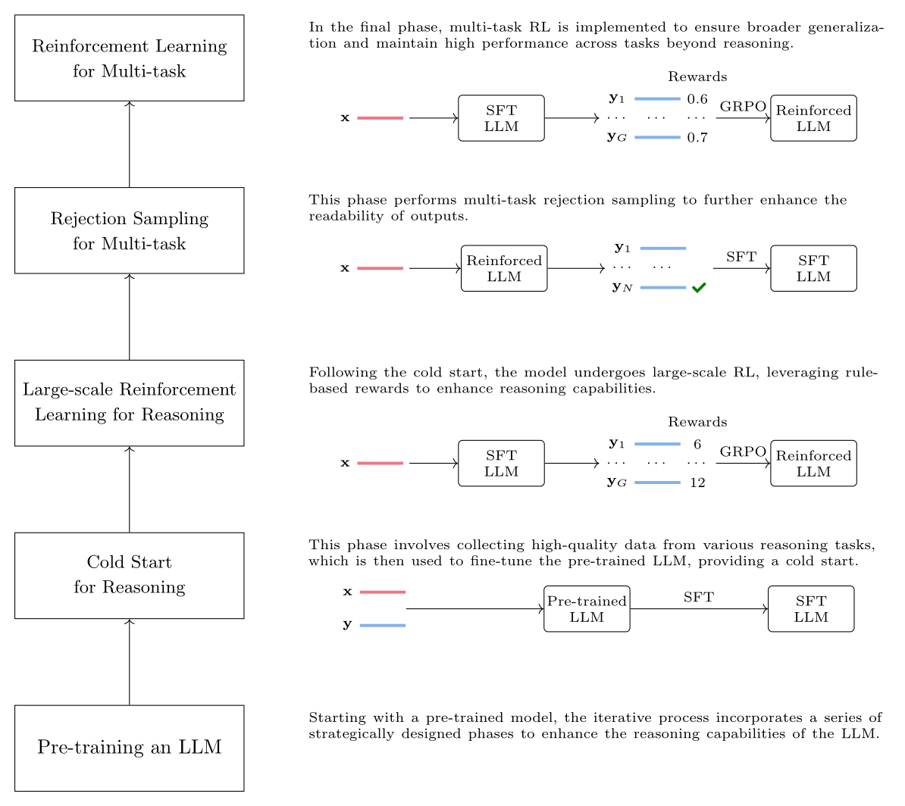
第一阶段用高质量推理数据做冷启动；下一阶段用基于规则的奖励（格式检查、答案验证等）施加大规模强化学习以强化推理。 由于这可能损害可读性，随后用拒绝采样和 SFT 在多个任务上打磨输出；最终的多任务强化学习阶段再用覆盖面更广的 奖励模型提升泛化。
顺序很关键。面向推理的强化学习放在前面，是因为后面的拒绝采样需要一个已经能探索有意义推理轨迹的模型； 若缺少这种能力，采出的候选质量差，后续 SFT 阶段就无材可选。推理能力被强化之后， 拒绝采样才能有效改善可读性，多任务强化学习才能恢复更广的指令遵循行为。
5.3 大规模强化学习
大规模推理强化学习把迭代循环扩展到大量提示、大量采样解答、强验证器与大规模训练基础设施。 规模能改善探索、让稀疏奖励更有用，因为模型有更多机会发现正确轨迹。但它同时增加了对可靠奖励、 稳定优化和细致监控的需求。
核心问题不只是模型能否找到正确解答，而是强化学习能否把“寻找的过程”变成模型习得行为的一部分。 这正是推理强化学习成为现代 LLM 研究主要方向的原因。
本节还强调两个现实挑战。其一，大规模强化学习需要高度可靠的奖励，因为策略会主动寻找使奖励最大化的行为； 数学与代码场景中基于规则的奖励很有吸引力，因为答案验证相对稳定。其二，用来约束策略漂移的参考模型， 会随着策略进步而显得过于束缚，因此一些方法会定期刷新参考模型，或以其他办法在稳定性与自适应之间取得平衡。
5.4 同策略蒸馏
之所以纳入同策略蒸馏（on-policy distillation），是因为它处在“监督蒸馏”与“强化学习式反馈”之间一个有用的中间地带。 它让训练状态保持同策略：学生先用当前策略生成轨迹，教师再在学生实际访问的状态上给出下一词元的分布级监督。
这缓解了“用教师生成轨迹做离线蒸馏”带来的分布不匹配。在论文的强化学习表述中，教师与学生分布之间的负 KL 散度 可以当作词元级奖励，给出比“只有结果”的监督更稠密的反馈。
与普通蒸馏的区别很重要。离线蒸馏在学生并未访问的、教师生成的轨迹上训练学生；OPD 则让学生先生成， 再让教师从学生访问过的前缀处继续示范。这让监督更稠密、更贴近学生真实犯的错误， 代价是训练期间要额外运行教师前向。
第 6 节
智能体强化学习
第 6 节把同一套强化学习视角从“单个回答”扩展到交互式智能体。在前面的章节里，轨迹常是一次补全或一条推理轨迹； 对智能体而言，轨迹还包括观测、计划、工具调用、返回结果、记忆操作与最终任务结果。序列因此更长，奖励结构也更复杂。
本节按“能力 → 基础设施 → 学习信号”的顺序展开。先问智能体必须会做什么，聚焦规划与工具调用； 再问怎样的环境能暴露这些决策并提供反馈；随后处理信用分配，因为延迟的任务成败必须连回早期的计划与动作； 最后说明智能体如何通过记忆、技能与轨迹精炼来复用经验。
| 智能体组件 | 论文强调什么 | 训练信号 |
|---|---|---|
| 规划 | 把任务分解为子目标与可执行步骤。 | 轨迹成败与计划质量。 |
| 工具调用 | 选择工具、组织参数、解读观测、适时停止。 | 执行正确性、工具使用的恰当性与成本。 |
| 环境 | 提供状态、动作、观测、转移与验证器。 | 可靠的状态式或任务成败式奖励。 |
| 记忆与技能 | 把经验转化为可复用的信息与行为。 | 检索或使用技能后后续任务的成败。 |
6.1 构建智能体能力
论文聚焦两项基础智能体能力，因为它们造成了后面绝大多数的学习问题。规划把任务分解为子目标与动作步骤； 工具调用让模型能与外部系统交互，如搜索引擎、API、代码解释器、数据库与软件环境。这些决策一旦出现， 仅有模仿数据通常就不够了——智能体还需要关于“它的计划和工具调用到底有没有奏效”的反馈。
规划
规划是“即使用户没有明说步骤，也能推断出完成任务所需步骤”的能力。教程的示例中，智能体面对一个带计算器和 数据库 API 的环境，收到一个看娃报酬任务，必须计划：抽取数字、计算 \(12\times 50/60\)、组织结果格式、通过 API 保存。
监督式规划数据可以提供最初的脚手架：数据可以包含环境信息、采样轨迹、轨迹评估与筛选出的示范。 强化学习随后通过交互改进策略，模型从真实任务执行中获得反馈。
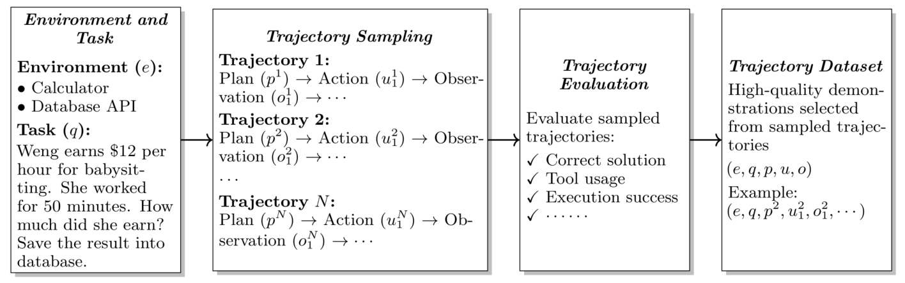
它与普通 SFT 的重要区别在于：计划要由其下游后果来评判。一个局部合理的子目标，可能在几次工具调用之后仍然导致失败； 一条最初失败的轨迹，反而可能揭示有用的替代路径。强化学习在这里有用，是因为它能按执行结果来优化计划， 而不只是模仿静态示范。
工具调用
工具调用带来新的决策：是否调用工具、调用哪个、参数如何组织、如何解读返回的观测、何时停止。 这些决策可以用基于任务成败、执行正确性或中间进展的奖励来优化 [15][16][17]。
论文把工具学习分为三个层次。基于提示的工具调用：给模型工具说明与示范，让它在上下文学到交互模式。 监督式工具数据：在“思考、动作、观测、最终答案”构成的轨迹上微调模型。强化学习则优化模仿无法直接评判的选择： 这次工具调用是否必要、参数是否有效、观测是否被正确使用、使用工具的成本是否值得。
| 工具使用阶段 | 教什么 | 主要局限 |
|---|---|---|
| 基于提示的工具调用 | 如何在推理、动作、观测与答案之间交替。 | 高度依赖上下文内能力。 |
| 监督式工具数据 | 如何模仿示范的工具轨迹。 | 无法直接优化任务成败或工具成本。 |
| 面向工具使用的强化学习 | 如何依据反馈选择并执行工具。 | 需要可靠的环境与奖励。 |
6.2 环境设计与扩展
有了规划与工具调用，下一个依赖项就是环境。环境决定智能体能学到什么，因为它规定了状态、可用动作、转移规则、 观测与成功标准。一个有用的环境应当既有足够挑战以教会真能力，又有足够结构以提供可靠反馈。
在智能体强化学习中，环境不只是背景板。它决定动作空间、在每个动作后暴露观测、提供学习所用的奖励或验证器。 对工具使用任务，这可能包括工具模式（schema）、可执行 API、状态变化、错误信息与任务成功检查。 设计不当的环境会让智能体学到脆弱的捷径，或收到误导性的反馈。
人工构造环境很昂贵。因此近期工作探索合成与程序化的环境生成。典型流水线是：定义环境规格、构建可执行组件、 生成场景、让智能体交互、验证结果，并用得到的轨迹进行学习 [18]。
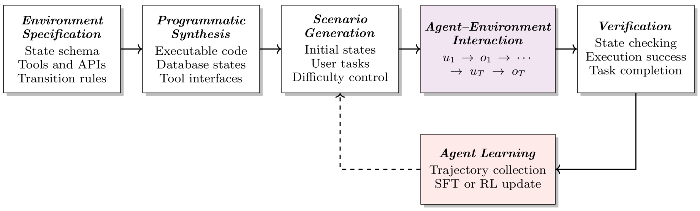
这种“交互中学习”的循环让智能体训练不同于普通的数据集训练：智能体可以持续遇到新任务、暴露当前策略的弱点， 并收集支持进一步改进的轨迹。
6.3 信用分配
环境返回最终结果后，优化器仍需知道从中该学什么。智能体轨迹在观察到最终奖励之前往往包含许多决策： 任务失败可能源于早期的规划错误、不正确的工具参数、误读的观测，或最终答案写错。 信用分配决定的就是轨迹的哪些部分该获得正向或负向的学习信号。
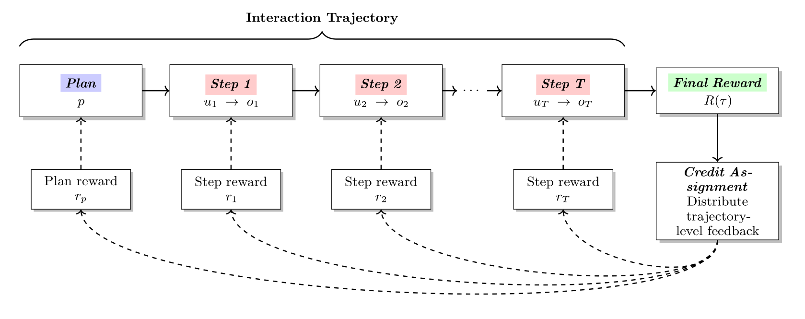
轨迹级奖励常常太粗糙。更有信息量的做法会加入中间奖励、过程监督、步骤验证器，或评估子目标的模型。 目标是把延迟的成功或失败与真正导致它的决策连接起来 [19]。
论文把不同层面的信用分开处理。计划级反馈评估最初分解是否有用；步骤级反馈评估单个动作，如工具调用或观测解读； 结果级反馈评估最终任务成败。组合这些信号，能帮智能体不只知道“这条轨迹失败了”，还知道“该改哪个决策”。
6.4 从智能体经验中学习
最后一步，是不再把智能体数据当作一次性消耗品。智能体系统不仅应从人类示范中学习，还应从自身的交互经验中学习。 随着智能体在动态环境中运行，它们会积累成功与失败的轨迹；这些轨迹能揭示可复用的知识、反复出现的解答模式， 以及静态监督数据难以覆盖的失败模式。
论文把这一转变描述为迈向智能体自我进化：通过积累、组织、复用经验来改进未来行为。三个机制是这一讨论的核心： 记忆管理存储有用信息；技能优化把重复行为抽象为可复用的工作流；轨迹精炼依据反馈修订智能体行为。
| 机制 | 从经验中保留什么 | 如何改进智能体 |
|---|---|---|
| 记忆管理 | 用户偏好、任务事实、成功或失败的轨迹。 | 检索相关的既往经验，并学习该添加、更新、删除还是忽略哪些记忆。 |
| 技能优化 | 跨多条轨迹的可复用模式。 | 把低层经验提炼为指导规划与工具调用的高层工作流。 |
| 轨迹精炼 | 来自当前尝试的反馈。 | 利用反思或评估器反馈修正后续尝试，有时表现为上下文内的策略改进。 |
6.4.1 记忆管理
记忆系统从过去的交互中存储有用信息，并在未来任务中检索使用。记忆管理器必须决定添加、更新、删除还是忽略什么。 这是一个学习问题：存太多会引入噪声，存太少又无法从既往经验中迁移。
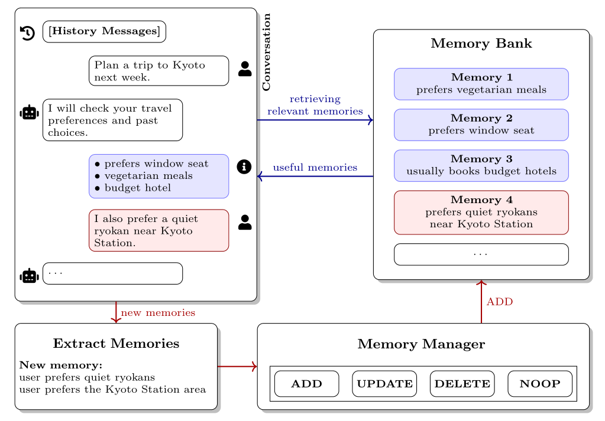
从记忆库检索相关记忆，支撑当前交互。
从完成的交互中提取有用信息，供以后使用。
通过添加、修订、删除或忽略来整合新信息。
朴素的记忆系统可以只是检索相关内容、存下新抽取的事实。论文强调，随着经验累积这会变难：记忆库里可能出现 冗余、过时或相互矛盾的信息。更有选择性的系统会把记忆维护视为一个操作选择问题：
这些操作分别是新建一条记忆、修订已有记忆、删除过时或矛盾的记忆，或保持记忆库不变。
Memory-R1 等近期工作把记忆管理器本身变成由强化学习优化的策略 [25]。给定抽取出的记忆与旧记忆库，管理器同时选择操作与更新后的记忆内容：
这里 \(o\) 是选定的记忆操作，\(m'\) 是更新后的记忆内容。奖励可以由下游任务表现定义， 例如 \(R_{\mathrm{answer}}=\mathrm{EM}(y_{\mathrm{pred}},y_{\mathrm{gold}})\)。
这样就无需给每个记忆操作人工标注。更新后的记忆若帮助智能体正确回答未来任务，记忆管理器获得正反馈； 若损害下游回答，该操作被抑制。论文还指出一个更长时域的挑战：有些记忆当下未必有用，但可能帮助未来任务， 因此记忆构建本身就可以表述为一个序贯决策问题 [26]。
6.4.2 技能优化
技能优化把重复出现的成功行为转化为可复用的技能。与存储“过去交互的具体信息”的记忆不同，技能是更高层的指令包： 它可以描述何时使用某个行为、遵循什么工作流、需要哪些工具、以及如何核验最终结果。
执行时，可以给智能体提供可用技能的说明，让它选择与当前任务最相关的技能。论文把这一检索步骤写成：
\(\mathcal{S}\) 是技能库，\(\mathrm{Score}(x,s_i)\) 度量任务与技能的相关性，\(\mathcal{S}^{*}\) 是被选中的技能集合。
手写技能可行，但论文明确指出技能质量非常依赖人的设计选择：一条看似结构完善的技能，换另一个智能体来用可能就会失效。 SkillRL 的应对方式是：按“产出的技能能否真正提升智能体表现”来优化技能生成 [27]。
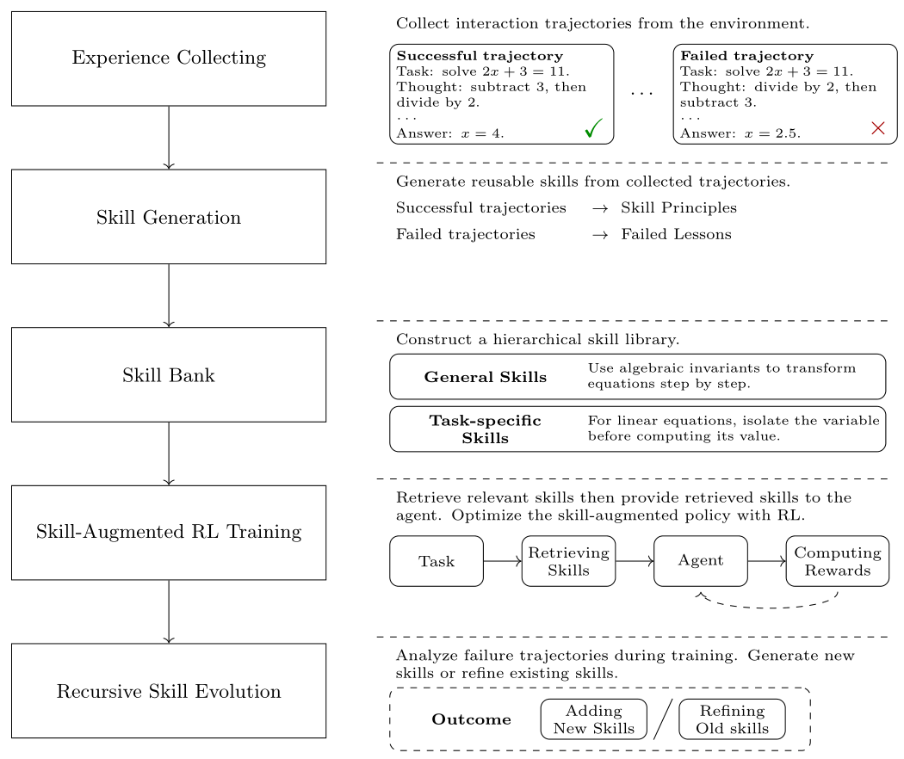
从环境中收集成功与失败的轨迹。
提取可复用技能，初始化技能库。
检索相关技能，引导强化学习的探索与规划。
用新轨迹发现新技能或改进旧技能。
这形成一个递归循环：技能库为强化学习训练提供高层行为先验，改进后的智能体又生成更好的轨迹，进一步打磨技能库。 就此而言，技能优化是把低层交互经验压缩为可在任务间迁移的可复用能力。
6.4.3 轨迹精炼
轨迹精炼利用某次解答尝试的反馈来修订智能体后续的行为。与“为未来任务存储或抽象经验”的记忆管理、 技能优化不同，精炼直接编辑当前或下一条轨迹。这对智能体特别自然，因为工具执行结果与环境状态在交互过程中就提供反馈。
从问题或环境目标出发。
生成第一次推理、规划或工具调用尝试。
接收验证器、评估器、工具或环境的信号。
把反馈转化为错误分析或改进策略。
依据反思产出更好的后续尝试。
Reflexion 是基于提示的代表性方法：智能体先生成初始轨迹、接收评估器反馈、写一段反思，再在后续尝试中使用该反思 [20]。论文把它与步骤级反馈联系起来：结果级反馈可能只说“最终答案错了”， 步骤级反馈却能指出轨迹错在哪一步、智能体应如何修正。
基于提示的精炼有用，但论文指出两个局限：其一，它依赖预训练模型理解反馈、修正行为的原生能力； 其二，它往往只帮到当前这次交互，没有把失败轨迹变成可迁移的经验。因此近期工作以更显式的方式训练智能体获得精炼能力—— 通过精炼微调，或基于探索的轨迹优化 [28][29]。
第 7 节
多模态强化学习
第 7 节把强化学习从纯文本 LLM 扩展出去。这一章放在推理与智能体之后，是因为同一套抽象现在要经受模态变化的考验： 多模态模型跨文本、图像、视频与音频处理和生成信息。本章区分两种情况——多模态理解：模型通常仍以非文本输入为条件 生成文本；多模态生成：模型合成图像或其他媒体。
尽管架构不同，核心的强化学习模式是相似的：采样输出或生成轨迹、用奖励评估、把模型朝被偏好的行为更新。 变化的是被打分的对象和“轨迹”的含义。视觉理解的轨迹仍可以是文本回答；图像生成的轨迹则可能是一条去噪路径或离散化的流。
| 场景 | 策略视角 | 奖励关注点 |
|---|---|---|
| 多模态理解 | 生成以视觉或多模态输入为依据（grounded）的回答。 | 遵循指令、视觉忠实度、事实性、有用性、避免幻觉。 |
| 扩散生成 | 把去噪过程视为多步轨迹。 | 图文对齐、人类偏好、安全性或美学质量。 |
| 流匹配生成 | 把连续生成路径离散为决策步骤。 | 奖励最终生成样本，并优化生成过程。 |
7.1 多模态理解模型
多模态理解是与 LLM 强化学习更接近的情形。模型要回答基于非文本输入的问题或遵循相关指令，但输出常常仍是文本。 奖励可以评估遵循指令、视觉忠实度、事实正确性、有用性与幻觉避免。这就要求奖励模型同时理解语言与视觉内容 [21]。
从强化学习视角看，视觉语言模型与普通的 LLM 很像，因为输出通常还是文本：状态现在包含文本指令和编码器得到的 视觉表征，动作仍是下一个生成词元。只要奖励模型能判断文本是否“落到了图像的事实依据上”， PPO 或 GRPO 风格的训练只需较小改动即可复用。
论文把视觉奖励建模呈现为 RLHF 的自然延伸：偏好学习仍是核心，但被打分的输出必须同时对照指令与图像来评判。 这在数据收集、模型 grounding 与奖励泛化上带来了新挑战。
由于视觉偏好数据昂贵，论文描述了一种多阶段策略：第一，用大规模文本偏好数据预训练通用的偏好判断能力； 第二，用图文对偏好数据微调，缩小“通用文本偏好”与“视觉指令遵循”之间的任务差距； 第三，用较小的视觉偏好数据微调，让奖励模型学到基于图像评估真正需要的模态对齐能力。
这也解释了为什么多模态强化学习不只是算法问题：策略优化器可能是熟悉的，瓶颈却常常在能否构建一个 可靠判断视觉事实、模态特有错误与人类偏好的奖励模型。
7.2 多模态生成模型
多模态生成是更难的情形，因为输出不再是词元序列。这类模型合成图像、视频等非文本内容，常通过扩散或连续变换过程实现。 最大似然或重建式训练能学到高质量的数据分布，却未必直接优化用户的高层偏好，例如物体数量、颜色、布局、画面质量或提示满足度。
强化学习在这里有用，因为生成的样本可以被灵活的奖励信号评估：来自人类、学习式奖励模型、视觉语言评审或自动规则。 主要技术问题是：如何把生成过程重新解释为一条轨迹，使策略梯度式优化能把“最终样本的奖励”连回模型中间的生成决策。
这就是本节分别讨论扩散模型与流匹配模型的原因。它们都生成非文本内容，但轨迹不同：扩散天然给出一条去噪状态序列； 流匹配往往是确定性的连续过程，在线强化学习适用前需要额外的随机化表述。
7.2.1 扩散模型
扩散模型通过逐渐的反想去噪过程生成样本：从随机噪声出发，模型反复预测更干净的潜变量，直到得到最终图像。 标准扩散训练主要教模型恢复数据分布，但并不保证最终样本满足细致的人类要求。
例如，模型可能生成一张很逼真的图像，却漏掉要求的数量、颜色或布局。强化学习在最终样本之上加一个评估器 （如偏好模型或视觉语言检查器），再把生成过程朝“获得更高奖励的样本”优化。
这里 \(\mathbf{z}\) 表示文本提示，\(\mathbf{x}_0\) 是最终生成的图像， \(R_{\mathrm{dm}}(\mathbf{x}_0,\mathbf{z})\) 是评估图像是否满足提示或偏好标准的奖励函数。
难点是扩散生成不是自回归的词元生成。按论文给出的表述，反向去噪过程可以被看作一个多步 MDP： 每一步以“当前带噪潜变量与提示”为状态，去噪后的下一个潜变量就是动作：
这里 \(U_{\theta}\) 表示学习到的反向去噪转移。去噪轨迹 \(\tau_{\mathrm{dm}}=\{\mathbf{x}_T,\mathbf{x}_{T-1},\ldots,\mathbf{x}_0\}\) 被当作强化学习优化的轨迹。
这沿用论文中 DPOK 风格的表述：把反向去噪过程当作轨迹，用最终图像的奖励去优化其各去噪步的对数概率 [22]。
在这种视角下，最终图像上的奖励可以用于去噪轨迹上的策略梯度损失 [22]。LLM 对齐中的技术也能自然迁移：KL 正则化可以约束模型， 参考扩散模型可以支持重要性采样，组相对方法可以比较同一提示下的多个生成样本。
7.2.2 流匹配模型
流匹配模型通过学习“简单先验分布到目标数据分布之间的连续时间流”来生成内容。它不像扩散那样逐渐加噪、去噪， 而是学习一个速度场，让样本沿连续轨迹被输运。
这带来不同的强化学习问题。扩散具有可以当作策略动作的随机去噪转移；标准流匹配在初始噪声固定后往往沿确定性的 ODE 路径行进，这限制了探索，也让转移概率难以用于策略梯度更新。
这里 \(\mathbf{x}_0\) 表示数据样本，\(\mathbf{x}_1\) 表示噪声样本，\(t\in[0,1]\) 是连续时间变量， \(\mathbf{v}_{\theta}\) 是学习到的速度场。
要应用强化学习，可以把连续生成路径离散为决策步骤。状态包含提示、时间与当前样本，动作是流模型预测的下一个状态：
这里 \(\mathbf{z}\) 是文本条件，\(\Delta t\) 是离散化步长，\(a_t\) 表示生成器产生的下一个样本状态。
直接的 ODE 表述是确定性的，这对在线强化学习造成障碍：策略梯度方法需要随机采样来探索不同轨迹、 并计算转移概率。Flow-GRPO 的做法是把确定性流转化为等价的随机微分方程——在保持边际分布不变的同时注入采样多样性 [23]。
这里 \(\mu_{\theta}\) 由学习到的速度场决定，\(\sigma_t\) 控制采样随机性，\(R_{\mathrm{fm}}\) 评估最终生成样本， \(\hat{A}_i\) 由一条轨迹在采样组内的相对奖励计算。
该目标在 Flow-GRPO 的表述下给出：把确定性流转化为随机 MDP，使在线强化学习能够采样轨迹并计算转移概率 [23]。
这使流匹配与 GRPO 风格的优化兼容：模型对同一条件采样多条生成轨迹、评估每个最终样本、在组内归一化奖励， 再按得到的相对优势更新生成器。
更宏观的信息是：强化学习正在成为基础模型共享的优化接口。只要一个系统能产出候选输出并获得评价反馈， 许多同样的设计问题就会再次出现：如何定义奖励、如何高效采样、如何分配信用、如何防止奖励被投机利用。
第 8 节
结论与未来方向
本文从 LLM 研究的视角介绍强化学习，思路只有一条，却被带到越来越丰富的场景中：模型产生行为，反馈评价该行为， 优化使策略朝更好的未来行为移动。前几节建立记号并搭建 PPO 风格的 RLHF 工作流；中间几节修补该工作流的薄弱环节； 后几节展示同一套反馈逻辑如何出现在推理模型、智能体系统与多模态模型中。
在这些场景中，强化学习已从一般的策略优化框架，演变为增强 LLM 推理、交互式决策与多模态生成能力的关键范式。 与此同时，教程在结尾强调这个领域远未定型：奖励可能昂贵、可能被投机利用；在线采样代价高； 扩展规律难以预测；持续自我改进目前更多是研究前沿，而非已成型的配方。
附录
常用系统与数据集
附录把这份入门变得可落地：列出面向 LLM 的现代强化学习所用的系统、数据集与环境。主章解释完概念后， 这层资料帮助读者为奖励建模、推理强化学习、智能体强化学习与多模态强化学习的后训练找到具体的工具与数据。 各系统对 PPO、GRPO、DPO、多模态训练、异步 rollout、工具调用与智能体环境的支持各不相同； 数据集则在反馈来源、规模、模态与目标用途上互有差异。
系统
| 系统 | 文本 | 图像 | 视频 | 音频 | 支持的训练方法 |
|---|---|---|---|---|---|
| TRL | 是 | 是 | 否 | 否 | SFT、奖励建模、PPO、GRPO、RLOO、DPO、KTO、ORPO、Online-DPO；经由 OpenEnv/Harbor 支持智能体强化学习。 |
| OpenRLHF | 是 | 是 | 否 | 否 | SFT、奖励建模、PPO、REINFORCE++、GRPO、RLOO、Dr.GRPO、DPO、KTO；以单轮/多轮执行器支持智能体强化学习。 |
| verl | 是 | 是 | 否 | 否 | SFT、PPO、GRPO、GSPO、ReMax、REINFORCE++、RLOO、DAPO、Dr.GRPO；经由多轮工具调用支持智能体强化学习。 |
| verl-agent | 是 | 是 | 否 | 否 | GiGPO、GRPO、PPO、DAPO、GSPO、RLOO、REINFORCE++、LoRA；为长时域 LLM/VLM 智能体专门打造的智能体强化学习。 |
| EasyR1 | 是 | 是 | 否 | 否 | GRPO、DAPO、REINFORCE++、ReMax、RLOO、GSPO、CISPO；不原生支持智能体强化学习。 |
| LLaMA-Factory | 是 | 是 | 是 | 是 | 预训练、SFT、奖励建模、PPO、DPO、KTO、ORPO、SimPO；不原生支持智能体强化学习。 |
| VeOmni | 是 | 是 | 是 | 是 | 单模态/多模态预训练与后训练、SFT 式训练、DPO、RL 训练器后端；无原生智能体强化学习环境栈。 |
| ms-swift | 是 | 是 | 是 | 是 | 预训练、SFT、奖励建模、PPO、GRPO、DPO、KTO、ORPO、CPO、SimPO、GKD；经由多轮 GRPO/工具使用训练支持智能体强化学习。 |
| Align-Anything | 是 | 是 | 是 | 是 | SFT、奖励建模、PPO、DPO、KTO、ORPO、SimPO、基于规则的强化学习；智能体强化学习在路线图上。 |
| OpenRLHF-M | 否 | 是 | 否 | 否 | 面向多模态模型的 PPO、GRPO、RLOO、Online-RLHF、拒绝采样；不原生支持智能体强化学习。 |
| DeepSpeed-Chat | 是 | 否 | 否 | 否 | SFT、奖励建模、基于 PPO 的 RLHF；不原生支持智能体强化学习。 |
| ROLL | 是 | 是 | 否 | 否 | SFT、DPO、蒸馏、PPO、GRPO、REINFORCE++、GSPO、RAFT++、StarPO、GiGPO；智能体强化学习。 |
| slime | 是 | 否 | 否 | 否 | PPO、GRPO、GSPO、REINFORCE++、OPD；经由自定义生成、工具、沙箱与验证器奖励支持智能体强化学习。 |
| OpenClaw-RL | 是 | 是 | 否 | 否 | 二元 RL/GRPO、OPD、混合 RL、LoRA 训练；面向个性化智能体、终端、GUI、SWE 与工具调用场景的异步智能体强化学习。 |
| SkyRL | 是 | 否 | 否 | 否 | GRPO、DAPO、异步 RL、兼容 Tinker 的训练；面向工具使用、检索、SQL 与长时域任务的智能体强化学习。 |
| Agent Lightning | 是 | 否 | 否 | 否 | RL、APO、SFT 式优化钩子；为既有智能体框架专门打造的智能体强化学习。 |
| RAGEN | 是 | 否 | 否 | 否 | PPO/StarPO 风格多轮优化、环境奖励；智能体强化学习。 |
| Search-R1 | 是 | 否 | 否 | 否 | 面向“推理-检索交织”模型的 PPO、GRPO、REINFORCE；面向检索/工具使用的智能体强化学习。 |
| AReaL | 是 | 否 | 否 | 否 | PPO/GRPO 风格强化学习，与智能体框架集成；智能体强化学习。 |
数据集
| 数据集 | 奖励模型 | 推理 | 智能体 | 规模 | 模态 | 来源 | 类别 |
|---|---|---|---|---|---|---|---|
| Anthropic/hh-rlhf | 是 | 否 | 否 | 169K | 文本 | 人类 | 成对偏好 |
| stanfordnlp/SHP-2 | 是 | 否 | 否 | 4.8M | 文本 | 人类/众包 | 成对偏好 |
| H4/stack-exchange-preferences | 是 | 否 | 否 | 10.7M | 文本 | 众包评分 | 评分/排序 |
| Summarize from Feedback | 是 | 否 | 否 | 64.8K | 文本 | 人类 | 成对偏好 |
| UltraFeedback | 是 | 否 | 否 | 64K / 340K | 文本 | GPT-4 | 评分、评述、成对数据 |
| berkeley-nest/Nectar | 是 | 否 | 否 | 183K / 3.8M | 文本 | GPT-4 | 7 路排序 |
| Skywork-Reward-Preference-80K | 是 | 否 | 否 | 80K | 文本 | 混合/精选 | 成对偏好 |
| nvidia/HelpSteer | 是 | 否 | 否 | 37K | 文本 | 人类 | 属性评分 |
| nvidia/HelpSteer2 | 是 | 否 | 否 | 1 万对 | 文本 | 人类 | 属性评分/偏好 |
| nvidia/HelpSteer3 | 是 | 否 | 否 | 4 万偏好 | 文本 | 人类 | 偏好、反馈、编辑 |
| Arena Human Preference 55K | 是 | 否 | 否 | 55K | 文本 | 人类用户 | 竞技场对战偏好 |
| VLFeedback | 是 | 否 | 否 | 80K / 380K | 文本、图像 | GPT-4V | 多模态偏好 |
| RLHF-V-Dataset | 是 | 否 | 否 | 5.7K | 文本、图像 | 人类 | 细粒度纠正 |
| openbmb/RLAIF-V-Dataset | 是 | 否 | 否 | 83K | 文本、图像 | AI 反馈 | 成对偏好 |
| OpenGVLab/MMPR-v1.2 | 是 | 是 | 否 | 3M | 文本、图像 | AI/验证器 | 多模态推理偏好 |
| open-r1/OpenR1-Math-220k | 否 | 是 | 否 | 220K | 文本 | 验证器/评审 | 数学推理轨迹 |
| AI-MO/NuminaMath | 否 | 是 | 否 | 900K | 文本 | 规则/GPT-4 | 数学 CoT / TIR |
| PRIME-RL/Eurus-2-RL-Data | 否 | 是 | 否 | 482K | 文本 | 验证器 | 数学/代码结果奖励 |
| AgentGym-RL-Data | 否 | 是 | 是 | 184K | 文本 | 环境 | 多轮智能体奖励 |
| ALFWorld | 否 | 否 | 是 | 3.5K 训练 | 文本 | 环境 | 文本世界任务奖励 |
| WebShop | 否 | 否 | 是 | 1.2 万任务 | 文本 | 环境 | 网购模拟奖励 |
| Search-R1 Data | 否 | 是 | 是 | 17 万训练 | 文本 | 检索器/规则 | 检索工具问答奖励 |
| Sokoban | 否 | 是 | 是 | 环境生成 | 文本、图像 | 环境 | 推箱解谜奖励 |
| Gym Cards | 否 | 是 | 是 | 环境生成 | 文本、图像 | 环境 | 逻辑牌戏奖励 |
| ToolBench | 否 | 是 | 是 | 126K | 文本 | API 执行 | 工具使用轨迹 |
这层资料用具体的系统与数据集补充主体介绍。由于新方法与系统出现得很快——尤其在推理强化学习、 智能体强化学习与多模态强化学习后训练周围——本网站提供的是一个进入周边生态的紧凑入口。
注：系统表整理于 2026 年 8 月。部分系统可能在发布后发生了变化；若当前版本与表中信息不符， 请联系作者以便更新信息。
选读文献
参考文献（按学术惯例保留英文原文，不翻译）
- Richard S. Sutton and Andrew G. Barto. Reinforcement Learning: An Introduction (2nd ed.). The MIT Press, 2018.
- Long Ouyang, Jeffrey Wu, Xu Jiang, Diogo Almeida, Carroll L. Wainwright, Pamela Mishkin, Chong Zhang, Sandhini Agarwal, Katarina Slama, Alex Ray, John Schulman, Jacob Hilton, Fraser Kelton, Luke Miller, Maddie Simens, Amanda Askell, Peter Welinder, Paul F. Christiano, Jan Leike, and Ryan Lowe. Training language models to follow instructions with human feedback. NeurIPS 2022, 2022.
- Paul F. Christiano, Jan Leike, Tom B. Brown, Miljan Martic, Shane Legg, and Dario Amodei. Deep reinforcement learning from human preferences. NeurIPS 2017, 2017.
- John Schulman, Filip Wolski, Prafulla Dhariwal, Alec Radford, and Oleg Klimov. Proximal policy optimization algorithms, 2017.
- Ralph Allan Bradley and Milton E. Terry. Rank analysis of incomplete block designs: I. the method of paired comparisons. Biometrika, 1952.
- Dakota Mahan, Duy Van Phung, Rafael Rafailov, Chase Blagden, Nathan Lile, Louis Castricato, Jan-Philipp Franken, Chelsea Finn, and Alon Albalak. Generative reward models, 2024.
- Tianci Liu, Ran Xu, Tony Yu, Ilgee Hong, Carl Yang, Tuo Zhao, and Haoyu Wang. OpenRubrics: Towards scalable synthetic rubric generation for reward modeling and LLM alignment. ACL 2026, 2026.
- Nathan Lambert, Valentina Pyatkin, Jacob Morrison, LJ Miranda, Bill Yuchen Lin, Khyathi Chandu, Nouha Dziri, Sachin Kumar, Tom Zick, Yejin Choi, Noah A. Smith, and Hannaneh Hajishirzi. RewardBench: Evaluating reward models for language modeling. Findings of NAACL 2025, 2025.
- John Schulman, Philipp Moritz, Sergey Levine, Michael I. Jordan, and Pieter Abbeel. High-dimensional continuous control using generalized advantage estimation. ICLR 2016, 2016.
- Zhihong Shao, Peiyi Wang, Qihao Zhu, Runxin Xu, Junxiao Song, Xiao Bi, Haowei Zhang, Mingchuan Zhang, YK Li, Y Wu, et al. DeepSeekMath: Pushing the limits of mathematical reasoning in open language models, 2024.
- Rafael Rafailov, Archit Sharma, Eric Mitchell, Christopher D. Manning, Stefano Ermon, and Chelsea Finn. Direct preference optimization: Your language model is secretly a reward model. NeurIPS 2023, 2023.
- DeepSeek. DeepSeek-R1: Incentivizing reasoning capability in LLMs via reinforcement learning, 2025.
- Hunter Lightman, Vineet Kosaraju, Yuri Burda, Harrison Edwards, Bowen Baker, Teddy Lee, Jan Leike, John Schulman, Ilya Sutskever, and Karl Cobbe. Let's verify step by step. ICLR 2024, 2024.
- David Silver, Julian Schrittwieser, Karen Simonyan, Ioannis Antonoglou, Aja Huang, Arthur Guez, Thomas Hubert, Lucas Baker, Matthew Lai, Adrian Bolton, et al. Mastering the game of Go without human knowledge. Nature, 2017.
- Shunyu Yao, Jeffrey Zhao, Dian Yu, Nan Du, Izhak Shafran, Karthik R. Narasimhan, and Yuan Cao. ReAct: Synergizing reasoning and acting in language models. ICLR 2023, 2023.
- Timo Schick, Jane Dwivedi-Yu, Roberto Dessi, Roberta Raileanu, Maria Lomeli, Eric Hambro, Luke Zettlemoyer, Nicola Cancedda, and Thomas Scialom. Toolformer: Language models can teach themselves to use tools. NeurIPS 2023, 2023.
- Cheng Qian, Emre Can Acikgoz, Qi He, Hongru Wang, Xiusi Chen, Dilek Hakkani-Tur, Gokhan Tur, and Heng Ji. ToolRL: Reward is all tool learning needs. NeurIPS 2025, 2025.
- Mengkang Hu, Pu Zhao, Can Xu, Qingfeng Sun, Jian-Guang Lou, Qingwei Lin, Ping Luo, and Saravan Rajmohan. AgentGen: Enhancing planning abilities for large language model based agent via environment and task generation. KDD 2025, 2025.
- Zhiwei Li, Yong Hu, and Wenqing Wang. Encouraging good processes without the need for good answers: Reinforcement learning for LLM agent planning. EMNLP Industry Track 2025, 2025.
- Noah Shinn, Federico Cassano, Ashwin Gopinath, Karthik Narasimhan, and Shunyu Yao. Reflexion: language agents with verbal reinforcement learning. NeurIPS 2023, 2023.
- Zhiqing Sun, Sheng Shen, Shengcao Cao, Haotian Liu, Chunyuan Li, Yikang Shen, Chuang Gan, Liangyan Gui, Yu-Xiong Wang, Yiming Yang, Kurt Keutzer, and Trevor Darrell. Aligning large multimodal models with factually augmented RLHF. Findings of ACL 2024, 2024.
- Ying Fan, Olivia Watkins, Yuqing Du, Hao Liu, Moonkyung Ryu, Craig Boutilier, Pieter Abbeel, Mohammad Ghavamzadeh, Kangwook Lee, and Kimin Lee. DPOK: Reinforcement learning for fine-tuning text-to-image diffusion models. NeurIPS 2023, 2023.
- Jie Liu, Gongye Liu, Jiajun Liang, Yangguang Li, Jiaheng Liu, Xintao Wang, Pengfei Wan, Di Zhang, and Wanli Ouyang. Flow-GRPO: Training flow matching models via online RL. NeurIPS 2025, 2025.
- David Silver, Satinder Singh, Doina Precup, and Richard S. Sutton. Reward is enough. Artificial Intelligence, 2021.
- Sikuan Yan, Xiufeng Yang, Zuchao Huang, Ercong Nie, Zifeng Ding, Zonggen Li, Xiaowen Ma, Jinhe Bi, Kristian Kersting, Jeff Z. Pan, Hinrich Schuetze, Volker Tresp, and Yunpu Ma. Memory-R1: Enhancing large language model agents to manage and utilize memories via reinforcement learning. ACL 2026, 2026.
- Yu Wang, Ryuichi Takanobu, Zhiqi Liang, Yuzhen Mao, Yuanzhe Hu, Julian McAuley, and Xiaojian Wu. Mem-alpha: Learning memory construction via reinforcement learning, 2025.
- Peng Xia, Jianwen Chen, Hanyang Wang, Jiaqi Liu, Kaide Zeng, Yu Wang, Siwei Han, Yiyang Zhou, Xujiang Zhao, Haifeng Chen, et al. SkillRL: Evolving agents via recursive skill-augmented reinforcement learning, 2026.
- Dayuan Fu, Keqing He, Yejie Wang, Wentao Hong, Zhuoma Gongque, Weihao Zeng, Wei Wang, Jingang Wang, Xunliang Cai, and Weiran Xu. AgentRefine: Enhancing agent generalization through refinement tuning. ICLR 2025, 2025.
- Yifan Song, Da Yin, Xiang Yue, Jie Huang, Sujian Li, and Bill Yuchen Lin. Trial and error: Exploration-based trajectory optimization of LLM agents. ACL 2024, 2024.